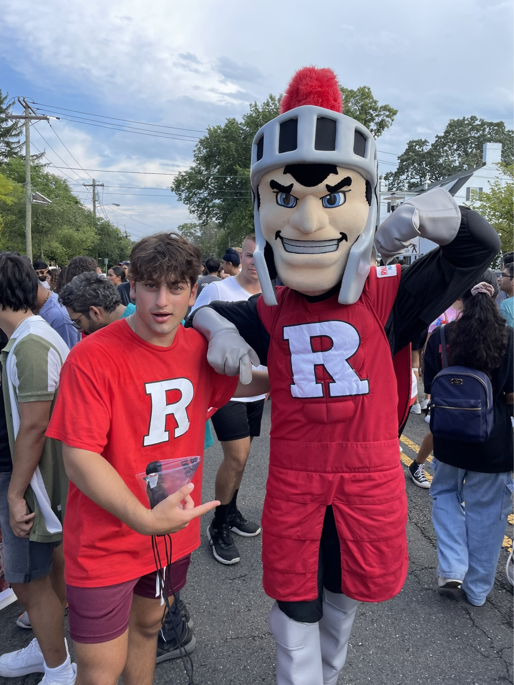
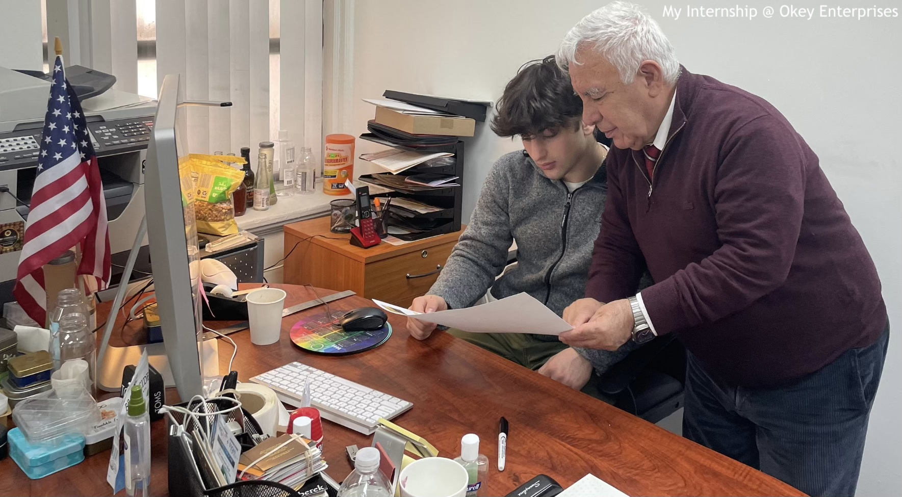

I am currently a student at Rutgers University (NB)
and I'm pursuing a major in Computer Science and a minor in Italian. In my Computer Science studies,
I've dived deep into the world of technology. I'm learning everything from programming and algorithms to understanding how computers work under the hood. It's an ever-evolving field, and
I'm thrilled to be a part of it. I'm also passionate about languages and cultures, which is why I chose a minor in Italian. Learning a new language isn't just about words; it's about connecting
with diverse cultures and enriching my perspective. Italian will be my fourth language, alongside English, Armenian, and Turkish, making it an enriching complement to my tech studies.
Beyond my academic pursuits, I'm deeply committed to health and fitness, hitting the gym four times a week and embracing distance running. Alongside my dedication to a healthy lifestyle, music
holds a special place in my heart and has been a significant part of my life. Among my favorite artists are Tyler, the Creator, Radiohead, Tame Impala, and Travis Scott. Some of my other interests include
traveling, cars, aviation, geopolitics, theatre, sneaker collecting, and gaming.

My decision to pursue a computer science degree was influenced by the boundless horizons it reveals. Coders today are the modern-day equivalents of revered creatives from the past, such as Leonardo da Vinci, Michelangelo, and many others like them, possessing the remarkable ability to bring any digital innovation to life. The intrinsic value within this field, combined with my passion for entrepreneurship and the intricacies of the business world, culminated in my definitive choice to study computer science. By pursuing this discipline, I am not only set to attain essential programming proficiencies but also to wield a comprehensive array of tools that enable me to spearhead the realization of any project I choose to pursue.

In the short term, I'm focused on gaining experience in the corporate world, especially in software engineering and development. I want to learn from experienced professionals, work on interesting projects, and be a part of creating new and useful things. At the same time, I'm eager to expand my knowledge
by staying up to date with the latest technologies and industry trends. This short-term phase is all about building the skills and know-how I need for my future ventures.
Looking ahead in the long term, my ultimate goal is to start my own tech company. I want to create valuable technology and explore entrepreneurship.
It's not just about business; it's about making a positive impact on the world, collaborating with a team of like-minded individuals, and innovating in various industries. To get there, I'll keep learning, building connections, and working hard to turn my ideas into reality, all while pursuing my passions.